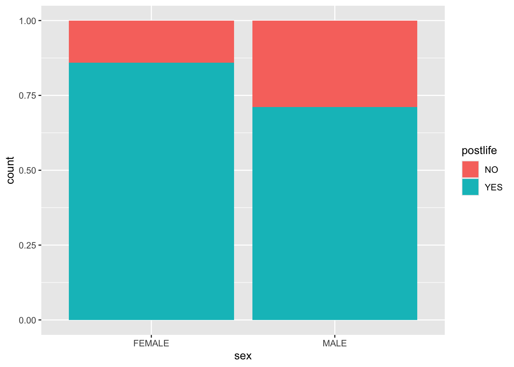
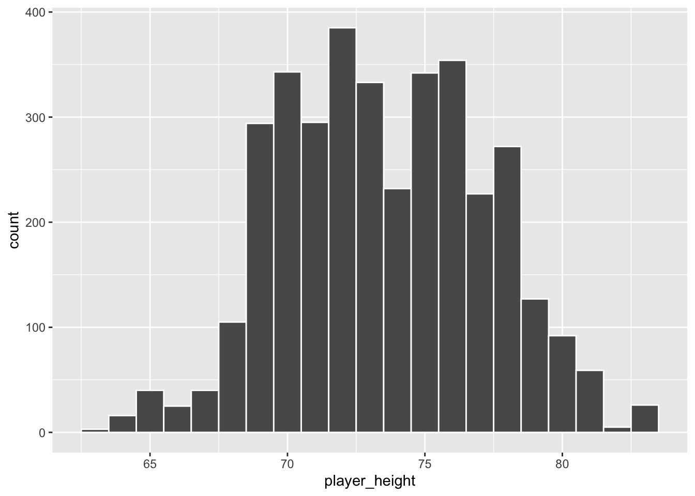

library(tidyverse)
library(infer)
gss2016 <- read_csv("https://docs.google.com/spreadsheets/d/e/2PACX-1vSXStAOCL3Y19OuZAoREVDHKzgiBycVo5h5NRvkU3l4IB81kx-BMU4hurcpWSdfYszJIRQJZ7QblJ8-/pub?output=csv")
beach_vb <- readRDS("beach_vb_lab04.RDS")Lab 04 / Exam 2 Rough Draft
Practice conducting hypothesis tests and confidence intervals in R.
Introduction
This lab will help you practice conducting hypothesis tests and constructing confidence intervals in R. This is the type of analysis you will be asked to conduct on Exam 2. This whole lab will make use of two main functions:
prop_test()for conducting inference about proportionst_test()for conducting inference about means
For this analysis, we need the tidyverse, and infer packages and data from the General Social Survey (GSS) and beach volleyball. The following code loads the package and data for this lab. Note, GSS was conducted on a random sample of U.S. adults.
The following code gives a glimpse of the data and then creates a stacked bar plot to investigate whether males and females believe in the afterlife at different rates.
glimpse(gss2016)Rows: 137
Columns: 14
$ id <dbl> 2111, 62, 508, 1469, 184, 6, 2063, 2201, 1501, 1139, 2288, 88…
$ year <dbl> 2016, 2016, 2016, 2016, 2016, 2016, 2016, 2016, 2016, 2016, 2…
$ age <dbl> 61, 35, 21, 22, 32, 53, 41, 67, 55, 48, 21, 27, 56, 80, 26, 5…
$ class <chr> "MIDDLE CLASS", "MIDDLE CLASS", "MIDDLE CLASS", "WORKING CLAS…
$ degree <chr> "HIGH SCHOOL", "HIGH SCHOOL", "HIGH SCHOOL", "HIGH SCHOOL", "…
$ sex <chr> "FEMALE", "MALE", "FEMALE", "MALE", "MALE", "FEMALE", "FEMALE…
$ marital <chr> "MARRIED", "WIDOWED", "NEVER MARRIED", "NEVER MARRIED", "NEVE…
$ race <chr> "WHITE", "BLACK", "WHITE", "WHITE", "BLACK", "WHITE", "WHITE"…
$ region <chr> "E. NOR. CENTRAL", "MIDDLE ATLANTIC", "NEW ENGLAND", "MOUNTAI…
$ partyid <chr> "IND,NEAR REP", "INDEPENDENT", "STRONG DEMOCRAT", "IND,NEAR D…
$ postlife <chr> "YES", "YES", "YES", "NO", "NO", "YES", "YES", "YES", "NO", "…
$ happy <chr> "HAPPY", "UNHAPPY", "UNHAPPY", "HAPPY", "UNHAPPY", "HAPPY", "…
$ relig <chr> "NONE", "PROTESTANT", "NONE", "NONE", "NONE", "NONE", "CATHOL…
$ cappun <chr> "FAVOR", "OPPOSE", "OPPOSE", "OPPOSE", "OPPOSE", "OPPOSE", "O…ggplot(data = gss2016, aes(x = sex, fill = postlife)) +
geom_bar(position = "fill")
Computing the point estimate
The following code computes proportions of each sex who believe in life after death.
gss2016 %>%
group_by(sex) %>%
summarize(count = sum(postlife == "YES"),
n = n()) %>%
mutate(p_hat = count/n)# A tibble: 2 × 4
sex count n p_hat
<chr> <int> <int> <dbl>
1 FEMALE 73 85 0.859
2 MALE 37 52 0.712Conducting the hypothesis test
Computing the point estimate
The following code computes the average age for each group (gender).
beach_vb %>%
group_by(gender) %>%
summarize(mean_age = mean(player_age, na.rm = TRUE))# A tibble: 2 × 2
gender mean_age
<chr> <dbl>
1 M 29.0
2 W 27.7HW 08 Code for Reference
Child choice / proportion inference
#load child_choice data
child_choice <- read_csv("https://docs.google.com/spreadsheets/d/e/2PACX-1vQpRItBQtDXie32T2QZygOPNBEOui1Gqz6XP-Q-g-zj4tRCkg7W8_-3Y6u8vFK8AoJkH4wHxNLiRLth/pub?gid=0&single=true&output=csv")Rows: 283 Columns: 1
── Column specification ────────────────────────────────────────────────────────
Delimiter: ","
chr (1): choice
ℹ Use `spec()` to retrieve the full column specification for this data.
ℹ Specify the column types or set `show_col_types = FALSE` to quiet this message.#glimpse the dataset to see dimensions, variable names, etc
glimpse(child_choice)Rows: 283
Columns: 1
$ choice <chr> "toy", "candy", "candy", "toy", "candy", "candy", "toy", "candy…#computing the sample proportion
child_choice %>%
summarize(n = n(),
count = sum(choice == "candy")) %>% mutate(p_hat = count/n)# A tibble: 1 × 3
n count p_hat
<int> <int> <dbl>
1 283 148 0.523#hypothesis test for one proportion
prop_test(child_choice, response = choice, p = 0.5,
success = "candy", z = TRUE)# A tibble: 1 × 3
statistic p_value alternative
<dbl> <dbl> <chr>
1 0.773 0.440 two.sided #computing Z score "by hand"
p_hat <- 0.523
p0 <- 0.5
n <- 283
SE <- sqrt(p0*(1-p0)/n)
Z <- (p_hat - p0)/SE
Z[1] 0.7738398#computing p-value "by hand"
2*pnorm(Z, lower.tail = FALSE)[1] 0.4390255#confidence interval for one proportion
prop_test(child_choice, response = choice,
success = "candy", z = TRUE)No `p` argument was hypothesized, so the test will assume a null hypothesis `p
= .5`.# A tibble: 1 × 5
statistic p_value alternative lower_ci upper_ci
<dbl> <dbl> <chr> <dbl> <dbl>
1 0.773 0.440 two.sided 0.465 0.580#lower bound of CI "by hand"
p_hat - 1.96*sqrt(p_hat*(1- p_hat)/n)[1] 0.4648067#upper bound of CI "by hand"
p_hat + 1.96*sqrt(p_hat*(1- p_hat)/n)[1] 0.5811933Beach volleyball example
#plot the height variable
ggplot(beach_vb, aes(x = player_height)) +
geom_histogram(color = "white", binwidth = 1)
#conduct a hypothesis test for whether average height is greater than 72
t_test(beach_vb, response = player_height, mu = 72,
alternative = "greater", conf_level = 0.99)# A tibble: 1 × 7
statistic t_df p_value alternative estimate lower_ci upper_ci
<dbl> <dbl> <dbl> <chr> <dbl> <dbl> <dbl>
1 24.5 3614 2.21e-123 greater 73.5 73.4 Inf#compute summary statistics for player height
summary(beach_vb$player_height) Min. 1st Qu. Median Mean 3rd Qu. Max.
63.0 71.0 73.0 73.5 76.0 83.0 #construct 99% confidence interval for player height
t_test(beach_vb, response = player_height, mu = 72, conf_level = 0.99)# A tibble: 1 × 7
statistic t_df p_value alternative estimate lower_ci upper_ci
<dbl> <dbl> <dbl> <chr> <dbl> <dbl> <dbl>
1 24.5 3614 4.42e-123 two.sided 73.5 73.3 73.7#compute test statistic and p-value "by hand"
xbar <- 73.5
mu0 <- 72
n <- 3615
s <- sd(beach_vb$player_height)
SE <- s/sqrt(n)
T <- (xbar - mu0)/SE
T[1] 24.50054pt(T, df = n - 1, lower.tail = FALSE)[1] 4.512928e-123#compute 99% confidence interval "by hand"
lb <- xbar - qt(.995, n - 1)*SE
ub <- xbar + qt(.995, n - 1)*SE
c(lb, ub)[1] 73.34222 73.65778